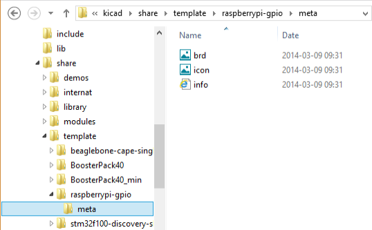

KiCad Manager
Centrum zarz±dzania projektami
Spis tre¶ci
Prawa autorskie
Copyright © 2010-2014. Ten dokument jest chroniony prawem autorskim. Lista autorów znajduje siê poni¿ej.
Mo¿esz go rozpowszechniaæ oraz modyfikowaæ na zasadach okre¶lonych w GNU General Public License (http://www.gnu.org/licenses/gpl.html), wersja 3 lub pó¼niejsza, albo okre¶lonych w Creative Commons Attribution License (http://creativecommons.org/licenses/by/3.0/), wersja 3.0 lub pó¼niejsza.
Wszystkie znaki towarowe u¿yte w tym dokumencie nale¿± do ich w³a¶cicieli.
Autorzy
Jean-Pierre Charras, Fabrizio Tappero, Kerusey Karyu.
Kontakt
Wszelkie komentarze lub sugestie dotycz±ce tego dokumentu prosimy kierowaæ na listê dyskusyjn± deweloperów programu KiCad: https://launchpad.net/~kicad-developers
Wersja
19 Pa¼dziernika 2014
Informacja dla u¿ytkowników komputerów Apple Macintosh
Wsparcie programu KiCad dla systemu operacyjnego Apple OS X jest w zaawansowanej fazie eksperymentalnej.
1. Wprowadzenie
Przeznaczenie
KiCad EDA Suite to pakiet programów do rysowania schematów i tworzenia obwodów drukowanych (PCB), który jest dostêpny dla nastêpuj±cych systemów operacyjnych:
- Linux
- Windows XP/2000/Vista/7
- Apple OS X (eksperymentalnie)
Narzêdzie o nazwie KiCad, to nadrzêdne centrum programu, pozwalaj±ce na zarz±dzanie plikami projektu, uruchamianie odpowiednich narzêdzi sk³adowych pakietu oraz generowania i sprawdzania plików produkcyjnych.
Do narzêdzi sk³adowych pakietu nale¿±:
- Eeschema: zaawansowany, hierarchiczny edytor schematów z wbudowanym edytorem bibliotek symboli.
- Pcbnew: edytor PCB z narzêdziami do automatycznego prowadzenia ¶cie¿ek, edycji footprintów (rysunków obudów), podgl±du 3D oraz generowania plików produkcyjnych (Gerber, Excellon).
- CvPcb: program po¶rednicz±cy pomiêdzy Eeschema a Pcbnew, pozwalaj±cy na przypisywanie symbolom ze schematu odpowiednich obudów, które bêdzie mo¿na umie¶ciæ na PCB.
- GerbView: program do przegl±dania plików produkcyjnych w formacie Gerber oraz plików wierceñ Excellon.
- Bitmap2Component: narzêdzie to tworzenia logotypów z przetworzonych map bitowych, zarówno jako symboli do umieszczania na schematach jak i footprintów mog±cych siê znale¼æ na PCB.
- PCB Calculator: dodatkowe narzêdzie do wyliczania grubo¶ci ¶cie¿ek, impedancji, napiêæ wyj¶ciowych liniowych stabilizatorów scalonych i rozkodowywania kodów paskowych rezystorów.
- Pl_Editor: Narzêdzie do tworzenia i edycji uk³adu stron (obramowañ arkuszy, tabelek tytu³owych oraz logotypów).
2. Instalacja i wstêpna konfiguracja
Zalecenia
Zalecane jest by karta graficzna w systemie operacyjnym umo¿liwia³a pracê z 24- lub 32-bitow± g³êbi± kolorów. 16-bitowa g³êbia kolorów pozwala na pracê w programie Eeschema, lecz w takim trybie program Pcbnew nie bêdzie dzia³a³ poprawnie w systemach Linux.
W systemach Windows z mechanizmem UAC (Windows Vista/7) najlepiej jest zainstalowaæ program KiCad EDA Suite w katalogu nadrzêdnym, zamiast w Program Files.
Dostosowywanie domy¶lnej konfiguracji
Domy¶lny plik konfiguracyjny (kicad.pro) jest umieszczony w katalogu kicad/template. Jego zawarto¶æ jest kopiowana do ka¿dego nowego projektu przy jego tworzeniu. Mo¿na go zatem zmodyfikowaæ, by dostosowaæ go do w³asnych potrzeb. Na przyk³ad mo¿na zmieniæ listê dostêpnych bibliotek dla projektów, aby by³y dostêpne dla wszystkich nowych projektów.
Aby w prosty sposób zmieniæ domy¶ln± konfiguracjê, uruchom program Eeschema - czy to za pomoc± centrum programu KiCad czy bezpo¶rednio z linii poleceñ (polecenie w systemie Linux: /usr/local/kicad/bin/eeschema); uaktualnij opcje konfiguracyjne a nastêpnie zapisz plik projektu jako /usr/local/kicad/template/kicad.pro
3. KiCad - Praca z projektami
Aby utworzyæ i zarz±dzaæ prostym projektem z jego wszystkimi elementami (tj. schemat, PCB, potrzebne biblioteki, pliki produkcyjne: Gerber, pliki wierceñ, pliki po³o¿eñ elementów), zalecane jest utworzenie nadrzêdnego projektu w nastêpuj±cy sposób:
- Utworzyæ katalog roboczy dla projektu (u¿ywaj±c narzêdzi dostêpnych z poziomu centrum programu lub narzêdzi dostêpnych z poziomu systemu operacyjnego).
- W katalogu tym przy u¿yciu KiCad-a stworzyæ plik projektu (generowany jest plik
.pro) za pomoc± ikony . Mo¿na te¿ pos³u¿yæ siê narzêdziem do generowania kompletnego projektu na podstawie gotowego szablonu, uruchamianym za pomoc± ikony
. Mo¿na te¿ pos³u¿yæ siê narzêdziem do generowania kompletnego projektu na podstawie gotowego szablonu, uruchamianym za pomoc± ikony  .
.
Jest wysoce zalecane by u¿yæ tej samej nazwy dla projektu i katalogu w którym siê on znajduje.
KiCad tworzy plik z rozszerzeniem .pro który zawiera listê parametrów, zale¿nych od danego projektu (np. nazwy plików schematu, listê u¿ytych bibliotek w schematach i PCB, oraz ustawienia programu). Nazwa domy¶lna pliku ze schematem i PCB jest oparta na nazwie projektu. Dlatego, je¶li projekt nazwany example zosta³ stworzony w folderze nazwanym example, domy¶lnie bêd± znajdowaæ siê tam pliki:
example.pro |
Plik projektu. |
example.sch |
Plik schematu. |
example.brd |
Plik z obwodem drukowanym. |
example.net |
Lista sieci. |
example.xxx |
Inne pliki tworzone przez narzêdzia, w tym pliki tymczasowe i kopie zapasowe. |
example-cache.lib |
Podrêczna pamiêæ z bibliotek± elementów u¿ytych na schemacie (kopie zapasowe u¿ytych elementów). |
4. Centrum zarz±dzania programu
Okno g³ówne

Okno g³ówne sk³ada siê z listy o strukturze drzewa (po lewej) zawieraj±c± pliki projektu, panelu uruchomieniowego (po prawej, na górze) pozwalaj±cego na uruchomienie poszczególnych narzêdzi oraz okna z wiadomo¶ciami. G³ówne menu oraz pasek narzêdzi mo¿e byæ u¿yte do utworzenia, odczytania, zapisania pliku projektu (*.pro), a tak¿e do zarchiwizowania ca³o¶ci projektu do pliku archiwum ZIP.
Panel uruchomieniowy

Poszczególne klawisze odpowiadaj± nastêpuj±cym poleceniom:
| Uruchamia Eeschema | Uruchamia GerbView | ||
| Uruchamia CvPcb | Uruchamia Bitmap2Component | ||
| Uruchamia Pcbnew | Uruchamia PCB Calculator | ||
| Uruchamia Pl_Editor |
Podgl±d drzewa projektu
 |
Klikniêcie podwójne na w tym wypadku otwieraj±c automatycznie plik pic_programmer.sch.Klikniêcie podwójne na w tym wypadku otwieraj±c automatycznie plik pic_programmer.brd.Klikniêcie prawym klawiszem wywo³uje podrêczne menu, które pozwala na dodatkowe operacje na plikach. |
Pasek narzêdzi
Tworzy plik konfiguracji dla nowego projektu. Je¶li plik z domy¶lnymi ustawieniami kicad.pro zostanie odnaleziony w kicad/template, jego zawarto¶æ zostanie skopiowana do nowego projektu. |
|
| Tworzy pliki dla nowego projektu na podstawie gotowego szablonu. Wszystkie podstawowe pliki szablonu zostan± skopiowane do nowego projektu. | |
| Otwiera istniej±cy projekt. | |
| Aktualizuje (zapisuje) bie¿±cy projekt. | |
| Tworzy archiwum ZIP ca³ego projektu (schematy, lokalne biblioteki, PCB, itp.). | |
| Od¶wie¿a zawarto¶æ drzewa (przydatne po zmianach w katalogu projektu). |
5. Szablony projektów
Wprowadzenie
Szablony u³atwiaj± konfiguracjê projektów, które posiadaj± pewne wspólne cechy, takie jak: wstêpnie zdefiniowane kontury obwodu drukowanego, po³o¿enia specyficznych z³±cz, wstêpnie narysowane fragmenty schematu, wstêpnie ustalone zasady projektowe, itp.
Szablon to specjalny katalog z plikami, które stanowi± wzorzec dla poszczególnych plików docelowego projektu. Szablon zawiera równie¿ specjalny katalog z metadanymi potrzebnymi do obs³ugi systemu szablonów (Nie s± one kopiowane do projektu).
Nazwa szablonu (SYSNAME) jest nazw± katalogu, w którym zapisano poszczególne pliki wchodz±ce w jego sk³ad. Wewnêtrzny katalog metadanych (METADIR) zawiera specyficzne pliki dostarczaj±ce podstawowych informacji o szablonie.
Wszystkie pliki oraz katalogi sk³adaj±ce siê na definicjê szablonu s± kopiowane do nowego projektu podczas jego tworzenia z wykorzystaniem szablonu. Podczas kopiowania plików do miejsca docelowego (¶cie¿ki docelowej), wszystkim plikom oraz katalogom, których nazwa pasuje do SYSNAME zostan± zmienione nazwy na zgodne z nazw± nowego projektu. Rozszerzenia plików pozostan± nienaruszone.
Szablony - Struktura wewnêtrzna
Szablony maj± do¶æ prost± strukturê, któr± mo¿na stworzyæ korzystaj±c z narzêdzi dostêpnych w ka¿dym niemal systemie operacyjnym: edytor tekstu oraz prosty edytor graficzny.
Metadane
Folder METADIR musi zawieraæ minimum jeden plik HTML opisuj±cy zawarto¶æ szablonu. Mo¿e równie¿ zawieraæ dodatkowe pliki wykorzystane w pliku opisu oraz ikonê szablonu.
Opis szablonu
meta/info.html - Zawiera informacje o zawarto¶ci szablonu, które u¿ytkownik widzi po wybraniu szablonu. Pozwala to na ³atwiejsze wybranie odpowiedniego szablonu podczas rozpoczynania nowego projektu.
Jest to plik hipertekstowy HTML, zatem mo¿na stosowaæ dodatkowe formatowania tekstu czy umieszczaæ dodatkow± grafikê w opisach. W pliku tym mo¿na u¿yæ tylko podstawowych elementów jêzyka HTML.
Nale¿y zwróciæ szczególn± uwagê na tag <title>, poniewa¿ jego zawarto¶æ jest u¿ywana jako nazwa w³asna szablonu widoczna na li¶cie szablonów do wyboru (pod ikon±, je¶li taka istnieje).
Ikona szablonu
meta/icon.png - Ikona o rozmiarze 64x64 pikseli, w formacie PNG, która zostanie u¿yta jako ikona na pasku wyboru szablonu w oknie dialogowym wyboru szablonu.
Przyk³adowy szablon
Poni¿ej znajduje siê przyk³adowa zawarto¶æ g³ównego katalogu z szablonem p³ytki rozszerzaj±cej Raspberrypi-Gpio:
Oraz jego katalog z metadanymi:

W pliku info.html znajduj± siê nastêpuj±ce dane:
<html>
<head>
<title>Raspberry Pi - Expansion Board</title>
</head>
<body>
<h1>Raspberry Pi</h1>
<h2>Expansion Board</h2>
This project template is the basis of an expansion board for the
<a href="http://www.raspberrypi.org/" target="blank">Raspberry Pi $25 ARM
board.</a>
<br><br>
This base project includes a PCB edge defined as the same size as the
Raspberry-Pi PCB with the connectors placed correctly to align the two boards.
All IO present on the Raspberry-Pi board is connected to the project through
the 0.1" expansion headers.
<br><br>
The board outline looks like the following:
<br><br>
© 2012 Brian Sidebotham<br>
© 2012 Kicad Developers<br>
</body>
</html>
Miejsce przechowywania szablonów
Lista dostêpnych szablonów jest tworzona na podstawie nastêpuj±cych lokacji ¼ród³owych:
- Szablony systemowe:
<kicad_bin_dir>/template/ - Szablony u¿ytkownika:
- w systemach UNIX:
~/kicad/template/ - w systemie Windows:
C:\U¿ytkownicy\<u¿ytkownik>\Moje Dokumenty\kicad\template\ - w systemie Mac:
~/Documents/kicad/template/
- w systemach UNIX:
Je¶li w systemie zdefiniowano specjaln± zmienn± ¶rodowiskow± KICAD_PTEMPLATES, zostaje dodana trzecia zak³adka Szablony Przeno¶ne, w której znajd± siê wszystkie szablony odnalezione w ¶cie¿ce do której odnosi siê KICAD_PTEMPLATES.
Tworzenie projektu na podstawie szablonu
Menu Plik / Nowy udostêpnia dwie opcje:
- Pusty projekt - Tworzy nowy, pusty projekt kopiuj±c zawarto¶æ pliku
template/kicad.prodo bie¿±cego folderu. - Nowy na bazie szablonu - Otwiera okno dialogowe z mo¿liwo¶ci± wyboru szablonu, na podstawie którego zostanie utworzony nowy projekt.

Okno dialogowe wyboru szablonu posiada listê ikon szablonów oraz pole opisu szablonu.
Pojedyncze klikniêcie na ikonie szablonu powoduje za³adowanie zwarto¶ci pliku info.html z folderu metadanych, oraz ich pokazanie w polu opisu:
Klikniêcie przycisku Ok rozpocznie proces tworzenia nowego projektu. Zawarto¶æ szablonu zostanie skopiowana do obecnej lokacji nowego projektu (z wy³±czeniem katalogu METADIR, o czym wspomniano ju¿ wcze¶niej) oraz wszystkim plikom pasuj±cym do wzorca SYSNAME zostanie nadana nowa nazwa zgodna z nazw± projektu.
Klikniêcie Anuluj nie spowoduje akcji kopiowania i w katalogu z nowym projektem zostanie umieszczony tylko plik .pro z minimalnym zestawem informacji.